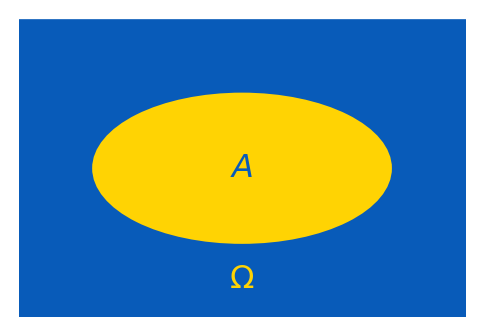
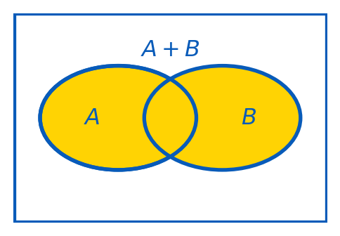
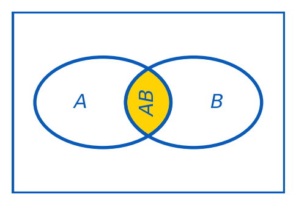
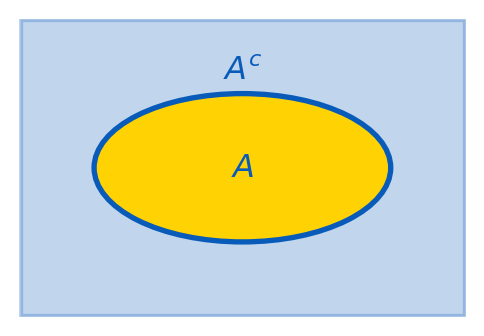
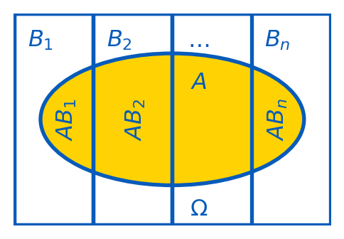

2 Basic Concepts and Rules of Probability
\[ \renewcommand{\P}{\mathbb{P}} \renewcommand{\E}{\mathbb{E}} \newcommand{\R}{\mathbb{R}} \newcommand{\var}{\mathrm{Var}} \newcommand{\cov}{\mathrm{cov}} \newcommand{\corr}{\mathrm{corr}} \newcommand{\dx}{\,\mathrm{d}x} \newcommand{\dy}{\,\mathrm{d}y} \newcommand{\eps}{\varepsilon} \]
2.1 Introduction to Probability Theory
Probability Theory is a branch of mathematics that deals with uncertainty and randomness. It provides a framework for quantifying and analyzing uncertainty in stochastic experiments.
Probability theory plays a crucial role in data science, where we often deal with uncertain data and make predictions based on probabilities.
An experiment or trial is any procedure that can be infinitely repeated and has a well-defined set of possible outcomes.
An outcome (denoted by \(\omega\)) is a particular result of an experiment.
A sample space (denoted by \(\Omega\)) is the set of all possible outcomes of an experiment (i.e. \(\omega\in\Omega\)).
An event is a subset of the sample space (e.g. \(A\subset \Omega\)), representing a specific outcome or a collection of outcomes.
Probability (denoted by \(\P\)) is a measure of the likelihood of an event occurring. It assigns a number between \(0\) and \(1\) to an event, where \(0\) indicates extreme unlikelihood, and \(1\) indicates certainty that the event will occur. In particular, \[0\leq \P(A)\leq \P(\Omega) = 1.\]
Example 2.1 When we throw a coin ones, the possible outcomes are \(H, T\) (stand for ‘head’ and ‘tail’).
Therefore, \(\Omega=\{H, T\}\).
There are \(4\) events one can consider: \(\{H\}, \{T\}, \{H,T\}, \emptyset\).
Example 2.2 Consider rolling a fair six-sided dice.
The possible outcomes then are \(1,2,3,4,5,6\).
Therefore, \(\Omega=\{1,2,3,4,5,6\}\).
Consider the event \(A\) of getting an even number: \(A = \{2, 4, 6\}\).
Consider the event \(B\) of getting a prime number: \(B = \{2, 3, 5\}\).
Then \(\P(A)=\P(B)=\frac12\) (think why).
Remark. In the experiment from Example 2.2, the following \(2^6=64\) events can be considered \[ \begin{gathered} \emptyset, \{1\}, \{2\}, \ldots, \{6\},\\ \{1,2\}, \{1,3\}, \ldots, \{5,6\},\\ \{1,2,3\}, \ldots, \{4,5,6\},\\ \ldots\\ \{1,2,\ldots,6\}. \end{gathered} \]
Example 2.3 Consider rolling twice a fair six-sided dice. Then outcomes are \(\omega=(a,b)\) where \(a,b\in \{1, 2, 3, 4, 5, 6\}\), i.e. \[ \Omega = \bigl\{ (a,b) \mid a,b\in \{1, 2, 3, 4, 5, 6\} \bigr\}. \] Then \(\sharp(\Omega)=6\cdot 6=36\). Let \(A\) be the event of having the sum of the numbers in two rollings bigger than \(10\). Then \[ A=\bigl\{ (5,6), (6,5), (6,6) \bigr\}. \] Therefore, \[ \P(A)=\frac{3}{36}=\frac1{12}. \]
Example 2.4 Consider drawing a card from a standard deck of \(52\) playing cards. The sample space \(\Omega\) is the set of all \(52\) pairs of the form \(vS\), where \(v\in\{A, 2, 3, 4, \ldots, 10, J, Q, K\}\) is the value of a card (here \(J\) represents a Jack, \(Q\) represents a Queen, \(K\) represents a King, and \(A\) represents an Ace), and \(S\in\{\clubsuit,{\color{red}\diamondsuit}, \spadesuit, {\color{red}\heartsuit}\}\) is the card suit (e.g. \(2{\color{red}\diamondsuit},\ldots, A{\color{red}\diamondsuit}\) are all diamonds). Let \(B\) be the event of drawing a red face card. Then \[ B=\{J{\color{red}\diamondsuit}, Q{\color{red}\diamondsuit}, K{\color{red}\diamondsuit}, J{\color{red}\heartsuit}, Q{\color{red}\heartsuit}, K{\color{red}\heartsuit}\}, \] and hence, \[ \P(B)=\frac{6}{52}=\frac{3}{26}. \]
2.2 Rules of Probability
Definition 2.5 The sum of events \(A\) and \(B\) is the event \(A+B\) (also denoted \(A\cup B\) or \(A\vee B\)) which occurs iff either \(A\) occurs or \(B\) occurs or they both occur.

Definition 2.6 The product of events \(A\) and \(B\) is the event \(AB\) (also denoted \(A\cap B\) or \(A\wedge B\)) which occurs iff both \(A\) and \(B\) occur.

Example 2.7 There is a standard deck of \(52\) playing cards. Find the probability of drawing either a red card or a face card (king, queen, or jack) from the deck in a single draw.
Solution: Let \(A\) be the event of drawing a red card, and \(B\) be the event of drawing a face card. Overall, there are \(26\) red cards, \(12\) face cards, and \(6\) red face cards. Therefore, \[ \P(A+B)=\frac{26}{52}+\frac{12}{52}-\frac{6}{52}=\frac{32}{52}=\frac{8}{13}. \]
TipRemember
Events \(A\) and \(B\) are called mutually exclusive events if only one of them may happen, i.e. if \(AB=\emptyset\). In this case \(\P(AB)=0\), and the addition rule takes the form \[ \P(A+B)=\P(A)+\P(B). \]
Definition 2.8 The complement to an event \(A\) is the event \(A^c\) which occurs iff \(A\) does not occur. Since \(\P(\Omega)=1\), one has \[ \P(A^c)=1-\P(A). \]

Example 2.9 A fair six-sided dice is rolling three times. Find the probability that the total score (the sum of three trials) will be at least \(4\) (event \(A\)).
Solution: The sample space \(\Omega\) consists of all triples \((a,b,c)\) with \(a,b,c\in\{1,2,\ldots,6\}\). Thus, \(\sharp(\Omega)=6^3=216\). The total score is \(4\) or more in all cases but the case \((1,1,1)\). Therefore, the answer is: \[ \P(A) = 1-\P(A^c)=1-\frac{1}{216}=\frac{215}{216}. \]
Definition 2.10 Conditional probability \(\P(A\mid B)\) is the probability of an event \(A\) occurring given that event \(B\) has already occurred, so we assume that \(\color{red}\P(B)\neq0\). The formula is \[ \P(A\mid B) = \frac{\P(AB)}{\P(B)}. \]
Example 2.11 In a bag of \(20\) marbles, \(8\) are red, and \(12\) are green. Three marbles are drawn from the bag without replacement. What is the probability that they all are of the same color?
Solution: we need to find the probability that either \(A=(r,r,r)\) or \(B=(g,g,g)\) holds. Note that \(A\) and \(B\) are mutually exclusive events. By the multiplication rule, \[ \P(A) = \frac{8}{20}\cdot\frac{7}{19}\cdot\frac{6}{18}, \] and \[ \P(B) = \frac{12}{20}\cdot\frac{11}{19}\cdot\frac{10}{18}. \]
Therefore, by the addition rule (for mutually exclusive events), \[ \P(A+B)=\P(A)+\P(B)=\frac{8\cdot 7\cdot 6}{20\cdot 19\cdot 18}+\frac{12\cdot 11\cdot 10}{20\cdot 19\cdot 18}=\frac{1656}{6840}=\frac{23}{95}. \]
Definition 2.12 An event \(A\) is said to be independent on an event \(B\) if the occurrence of \(B\) does not affect the probability of occurrence of \(A\). In other words, \(A\) is independent on \(B\) iff \[ \P(A\mid B) = \P(A). \]
Example 2.13 A fair coin is tossing twice. Let \(A\): a head appeared in the first tossing, and \(B\): a tail appeared in the second tossing. Then \(A\) and \(B\) are independent. \(A=\{HH,HT\}\), \(B=\{HT,TT\}\), and hence, \(AB=\{HT\}\). Then \(\P(AB)=\frac14=\frac12\cdot\frac12=\P(A)\P(B)\).
TipRemember
If \(A\) is independent on \(B\) then \(B\) is independent on \(A\), and \[ \P(AB)=\P(A)\,\P(B). \]
Remark. If three (or more) events are pairwise independent: \(A\) and \(B\) are independent, the same for \(B\) and \(C\), and for \(A\) and \(C\), it still may be that they are not independent in total, and then, in general, \(\P(ABC)\neq\P(A)\P(B)\P(C)\) (see the multiplication rule).

From Definition 2.10, we have that \[ \P(B) \P(A\mid B) = \P(AB)=\P(BA)=\P(A)\P(B\mid A). \] This implies the following important statement.
Example 2.14 A patient has taken a test for a rare disease. The prevalence of the disease in the population is known to be very low, only \(0.1\)%. The test correctly identifies the disease in \(95\)% of cases when it’s present. The test incorrectly indicates the presence of the disease in \(3\)%, of cases where it’s not actually present. The patient has just received a positive test result for the disease. What is the probability that he actually has the disease?
Solution: Let \(D\) denote the event of having the desease for a member of the population, then \(\P(D) = 0.001\) (\(0.1\)%). Let \(T\) denote the event of the positive test result. Then we know that \[ \P(T|D) = 0.95, \qquad \P(T|D^c) = 0.03. \] By the very definition, \(D\) and \(D^c\) form a partition of \(\Omega\). Then \[ \P(D|T) = \frac{\P(T|D) \cdot \P(D)}{\P(T|D) \cdot \P(D) + \P(T|D^c) \cdot \P(D^c)} = \frac{0.95 \cdot 0.001}{0.95 \cdot 0.001 + 0.03 \cdot (1 - 0.001)} \approx 0.0306. \] So, given a positive test result for the disease, the probability that the patient actually has the disease is just \(3.06\)%.